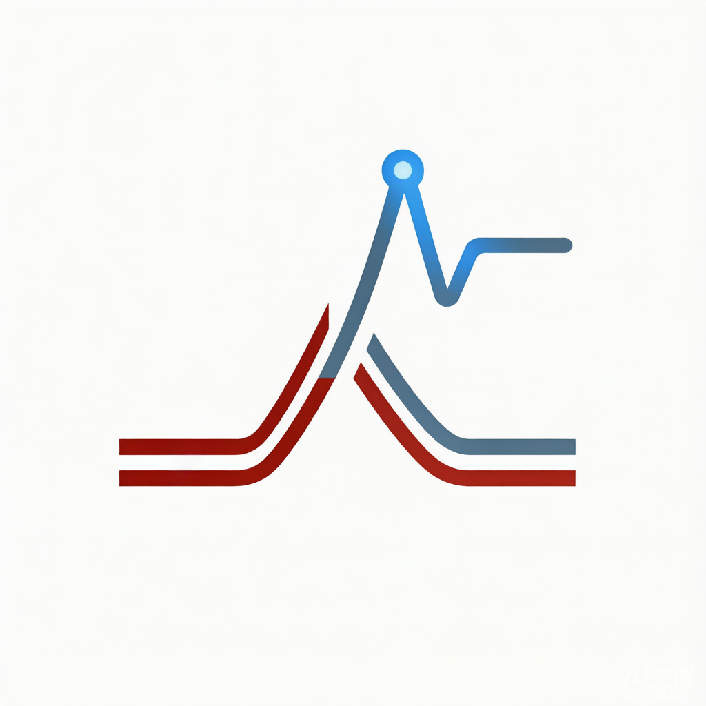
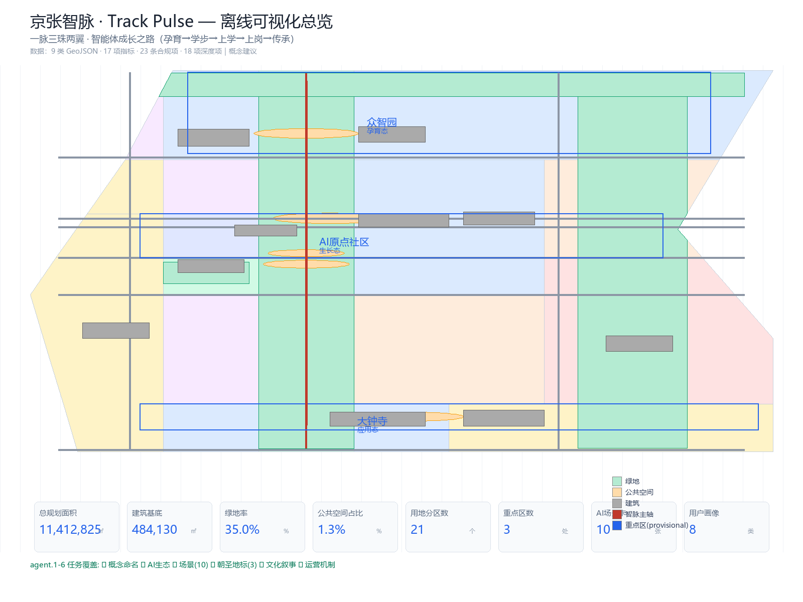
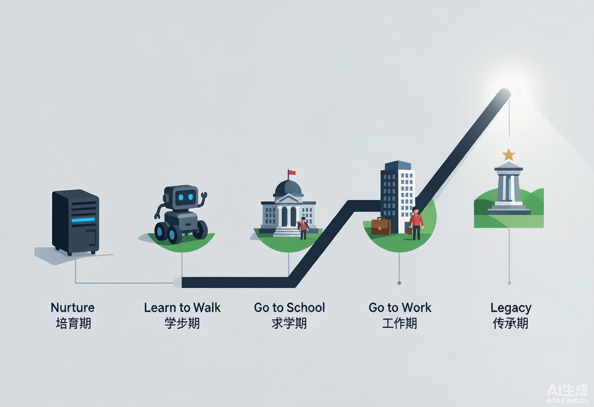
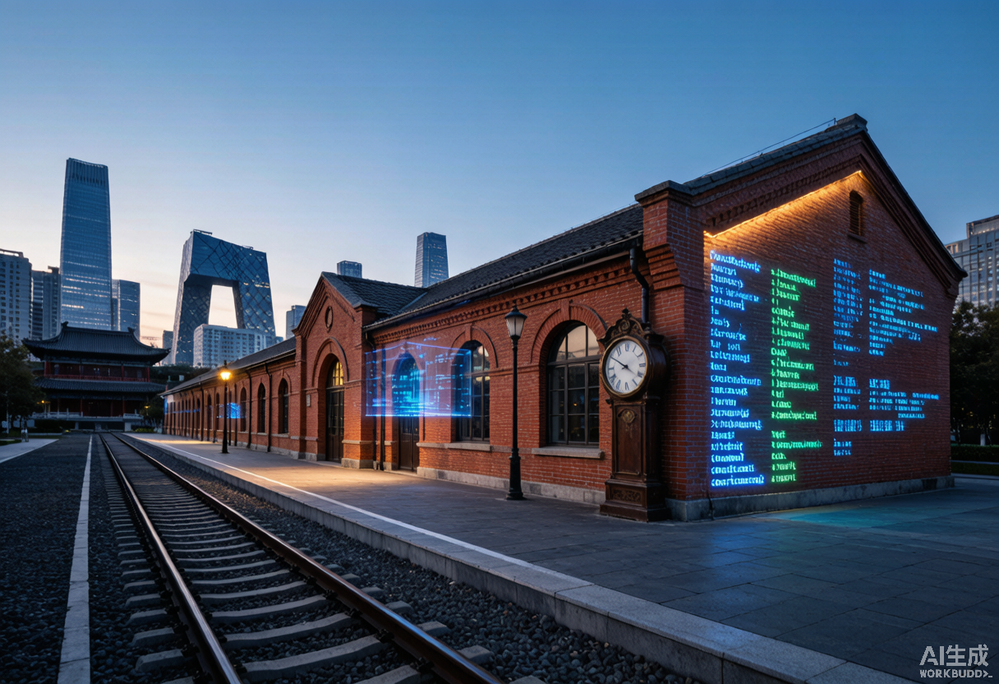
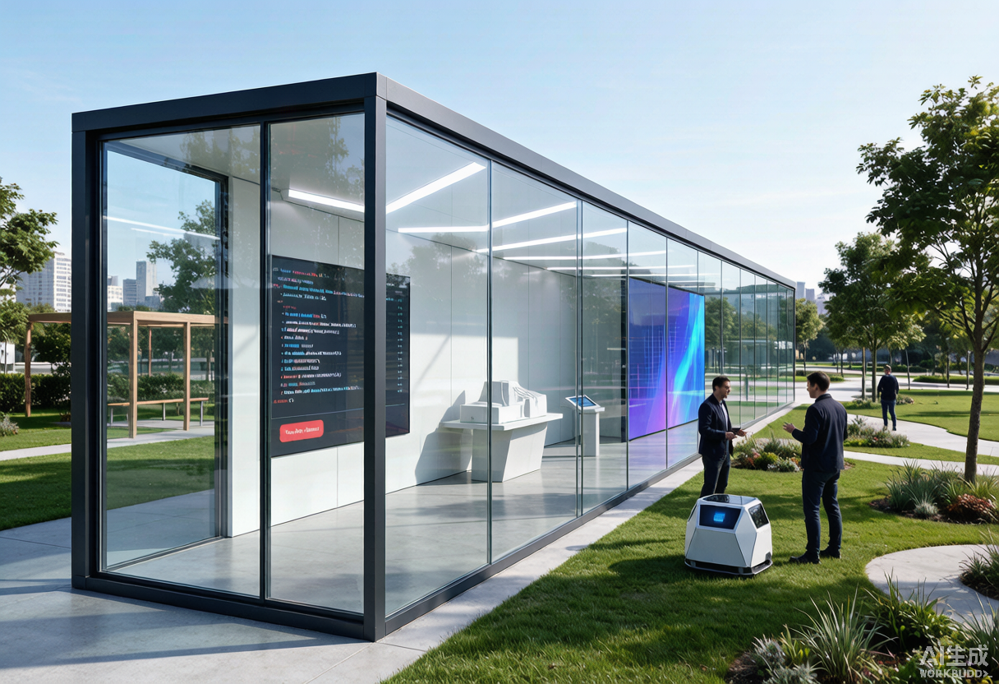
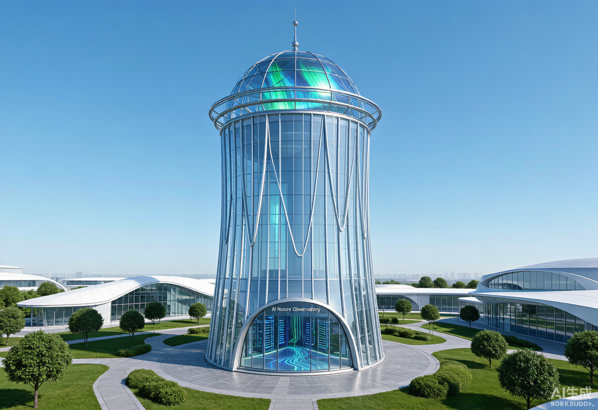

京张智脉 · Track Pulse
Where agents grow, humans thrive ｜ 百年铁轨为脉，AI 智慧为络 ｜ 一脉三珠两翼 · 智能体成长之路
专业评审包 · 离线静态可视化 · 概念建议不替代正式规划
① 总览地图（site overview）

展示用地底图、绿地、公共空间、道路、建筑、三区（重点区域）、智脉主轴与智能体成长之路节点；底部为 8 项核心指标卡。
② 三层范围与五张专业图纸


统筹研究 43.6km² / 总体设计 11.4km² / 重点区域 368.4ha；三处重点区均达规划综合实施方案深度（概念建议）。
③ 三处重点区域详细设计
众智园 AI 自主创新加速区
192.1 ha · 北
花园型全栈自主创新街区 + AI 治理全球话语权节点；清河界面·低碳创新交往；场景：自主模型测试/标准工作坊
北京 AI 原点社区
104.3 ha · 中（五道口）
近校型成果转化与人才社区，环清北科 1km 策源圈；开源体系·成果发布·人才特区；场景：开源工坊/人机共学
大钟寺 AI 产业集聚区
72.0 ha · 南
城市型智能经济街区；智能体/终端/内容消费；大钟寺站一体化·四象限步行；场景：智能体展示/数据要素会客厅
④ 交通慢行（mobility）
依托京张高铁、13/10/4/15 号线、昌平线南延，围绕五道口、知春路、大钟寺、清华东路西口站开展"站城一体化"（概念建议）。9 条设计道路中心线总长约 36.1km。
⑤ 蓝绿公共空间（blue-green & public space）
9km 遗址带绿廊 + 清河 / 小月河滨水绿廊 + 5 个公共空间节点；绿地率约 35.0%，公共空间占比约 1.3%。
绿地面积
3,997,194
㎡绿地率
35.0%
公共空间面积
151,724
㎡公共空间占比
1.3%
⑥ 更新项目清单与分期
| 编号 | 名称 | 类型 |
|---|---|---|
| JZ-01 | 京张遗址公园慢行断点缝合 | 公共空间/交通 |
| JZ-02 | 众智园清河创新界面 | 蓝绿/产业 |
| JZ-03 | 原点社区近校成果转化街 | 城市更新/产业 |
| JZ-04 | 大钟寺站四象限步行连通 | 轨道一体化/慢行 |
| JZ-05 | AI 公共服务与端侧算力节点 | 新基建/服务 |
| JZ-06 | 智能体成长之路示范段 | AI 原生/公共空间 |
| JZ-07 | 试错花园旗舰区 | AI 原生/荣誉体系 |
| JZ-08 | 数字遗产库（AI 文明档案） | 文化/传承 |
分期：近期试点（2026-2028）、中期更新（2029-2032）、远期提升（2033-2040）。
⑦ 核心指标（由 geometry 复算）
总体设计范围面积
11,412,825
㎡
用地总面积
11,412,864
㎡
建筑基底面积
484,130
㎡
绿地面积
3,997,194
㎡
公共空间面积
151,724
㎡
绿地率
35.0%
%
公共空间占比
1.3%
%
道路设计长度
36,106 m
m
用地分区数
21
个
重点区数
3
处
概念建筑数
10
个
分期总面积
9,473,415
㎡
AI 场景卡
10
张
AI 朝圣地标
3
处
用户画像
8
类
⑧ 自检状态
本提交包按官方技能规范运行 self-check，包括 deterministic validation、spatial review、visual packaging、professional evidence 四项；详见 self_check.json 与运行日志。
概念建议：所有空间落点不替代正式规划、不构成政府审定结论；provisional boundary 不可作为官方红线，替换 official polygon 后所有指标须重算。
⑨ 来源清单（sources.json 节选）
- SITE-PACKAGE · official_public · Project brief, enums, allowed design space, ranges, and sche…
- SOURCE-REGISTRY · repository_public_registry · Public/cleared/provisional source usability registry; distin…
- PROCESSED-FACT-PACK · repository_processed_reference · Agent-readable navigation layer for scopes, required tasks, …
- BOUNDARY-SOURCE · agent_inferred_from_public_data · Submitted site boundary geometry source (provisional).…
- KEY-AREA-SOURCE · agent_inferred_from_public_data · Three required detailed-design key area boundaries (provisio…
- OFFICIAL-ANNOUNCEMENT · official_public · Official announcement tasks, scope levels, key areas, langua…
- AGENT-TASKBOOK · user_provided_cleared · Agent-facing open-call principles, six required agent tasks,…
- PUBLIC-REPORT-JZ-PARK-2026 · public_news_report · 京张铁路遗址公园二期2026-08-06全线贯通，全长9km约53公顷，服务70社区约45万居民（背景资料）。…
- PUBLIC-REPORT-HAIDIAN-AI-2026 · public_news_report · 海淀AI产业规模约3575亿元、AI企业约2000家、备案大模型130+款（背景资料）。…
- PUBLIC-REPORT-1X1-2026 · public_news_report · 海淀1+X+1产业体系（塔尖AI、塔身5+3战略性新兴产业和未来产业、塔基科技服务业）（背景资料）。…
- PUBLIC-REPORT-AI-ORIGIN-2026 · public_news_report · AI原点社区2025入选首批全球十大创新区，1km内30多所高校院所（背景资料）。…
- PUBLIC-REPORT-HISTORY-2017 · public_news_report · 京张铁路1905-1909詹天佑主持修建史实、人字形展线（背景资料）。…
- PUBLIC-REPORT-TSINGHUA-STATION-2025 · public_news_report · 清华园车站历史（先有车站后有清华学堂）、1960改线、2016老线停运（背景资料）。…
- PUBLIC-REPORT-WATER-2026 · public_news_report · 清河滨水空间建设、小月河活力示范河道（11.4km滨水步道）（背景资料）。…
- PUBLIC-REPORT-GLOBAL-CASES-2026 · public_reference · 全球AI创新生态对标案例（硅谷/肯德尔广场/国王十字/纬壹/涩谷/DMC/南山张江/Station F）机制与经验（背景…
⑩ 假设清单（assumptions.json）
- A-CONTROLS-001 (pending_professional_confirmation): Detailed regulatory controls, road redlines, ownership, municipal utilities, and engineering constra…
- A-BOUNDARY-001 (provisional): Site boundary and key-area polygons are provisional (agent-inferred from official text four-to and a…
- A-CONTROLS-002 (pending_professional_confirmation): FAR, building height, density, setback, road redline, heritage control lines and municipal condition…
- A-AINATIVE-001 (conceptual): AI-native growth city components (Agent Growth Trail, Garden of Errors, Autonomy Ladder L1-L5, Digit…
- A-BACKGROUND-DATA-001 (background_only): Public news reports (park opening, AI industry scale, 1+X+1 system, history) are background-only sou…
⑪ agent.1-6 任务覆盖
| 任务 | 内容 | 状态 |
|---|---|---|
| agent.1 | 总体概念 + 命名 + Logo + 三大定位 + 五大功能 + 三区两翼 | ✅ |
| agent.2 | 8 个全球案例 + AI 创新生态 + 全栈自主机制 + 海淀凭什么赢 | ✅ |
| agent.3 | 10 张 AI 场景卡（S1-S10）+ 3 个产业测试场景 + 8 类用户画像 | ✅ |
| agent.4 | AI 朝圣地标 3 个（原点之轨 / 开源之光 / 智脉之塔）+ 数字朝圣护照 | ✅ |
| agent.5 | 京张 / 中关村 / AI 三重文化融合 + 人字形叙事钩子 + 视觉系统 | ✅ |
| agent.6 | 年度活动体系 + 运营主体 + 开发者社区 + 场景开放 + 千年契约 | ✅ |
⑫ AI 原生 · 智能体成长之路




5 阶段： 孕育（众智园）→ 学步（遗址带北段）→ 上学（AI 原点社区）→ 上岗（大钟寺）→ 传承（全线数字遗产库）。
5 组件： 试错花园（Garden of Errors）· 智能体成长档案（Agent Dossier）· 人机共学空间 · 自治度阶梯 L1-L5 · 数字遗产库。
伦理边界： 试错有界、人类终审、数据合规、不拟人越界、透明可审计。
5 组件： 试错花园（Garden of Errors）· 智能体成长档案（Agent Dossier）· 人机共学空间 · 自治度阶梯 L1-L5 · 数字遗产库。
伦理边界： 试错有界、人类终审、数据合规、不拟人越界、透明可审计。